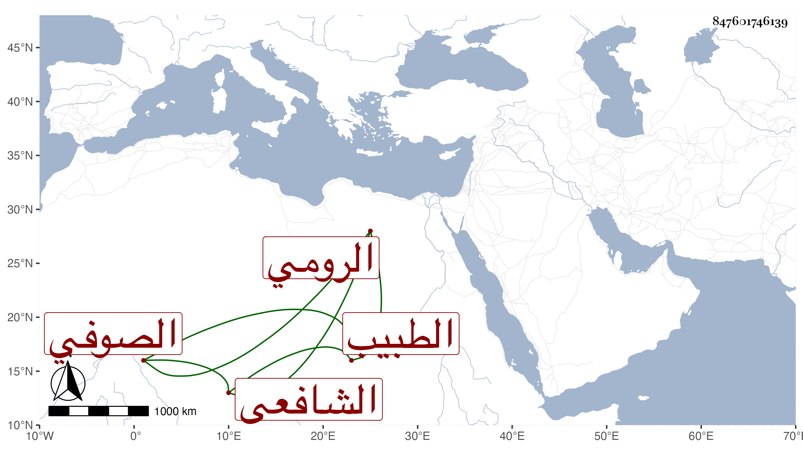

0902Sakhawi.DawLamic.ITO20230111-ara1.EIS1600.847601746139
Biography ID: 847601746139
972
إسماعيل الرومي الشافعي الصوفي الطبيب نزيل البيبرسية ويعرف بكردنكس لكونه كان أعوج الرقبة . ذكره لي بعض الفضلاء ممن أخذ عنه وبالغ في الثناء عليه وأنه كان ماهرا بالطب والقراءات وغير ذلك صوفيا عفيفا وأما شيخنا فإنه قال في أنبائه أنه كان يقرئ العربية والتصوف والحكمة وامتحن بمقالة ابن العربي ونهى مرارا عن إقرائها ولم يكن محمود السيرة ولا العلاج وكان من صوفية البيبرسية . مات في تاسع شوال سنة أربع وثلاثين انتهى . وممن أخذ عنه الشرف بن الخشاب ونسبه تبريزيا وأذن له في إقراء الطب وكان المظفر الأمشاطي يصحح عليه بعض محافيظه .
